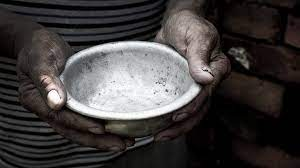
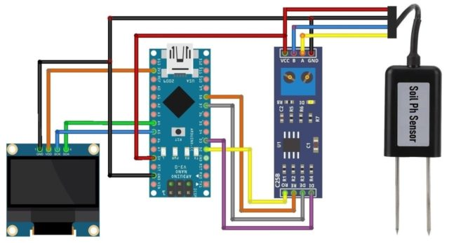
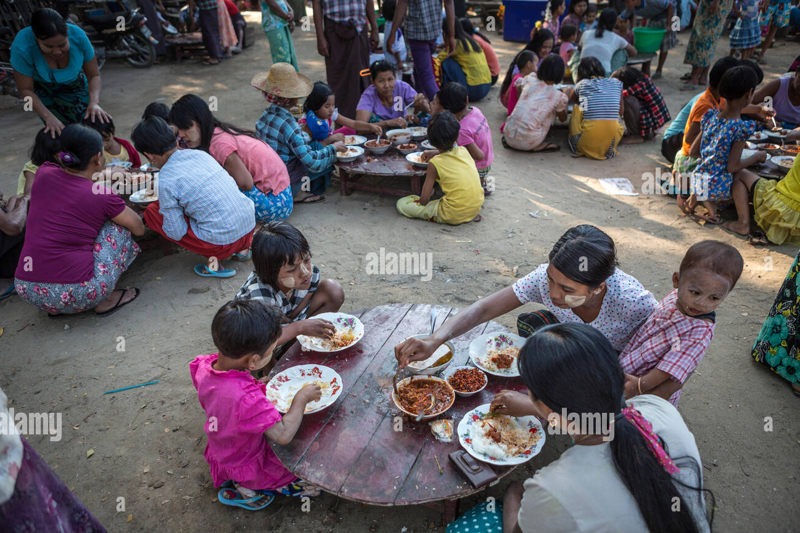

A fome é um desafio global complexo, além da escassez de alimentos. Está ligada a fatores socioeconômicos, políticos e ambientais, exigindo uma abordagem interdisciplinar para ser compreendida e enfrentada.
Neste estudo, abordaremos o problema dos agrotóxicos na produção de alimentos, visando colher e consumir alimentos mais saudáveis. Apresentaremos dados estatísticos relevantes para incentivar a busca por soluções eficazes para esse grave problema humanitário.
Será bom não apenas para os agricultores, mas também, para a saúde da população como um todo (principalmente os consumidores dos alimentos cultivados).

Planejamos criar um neutralizador de pH inteligente com base em dados de sensores que seram posicionados no solo com a presença de um arduino e motores.

Nosso objetivo é conscientizar os produtores sobre a saúde do solo, fornecer alertas relevantes, consequentemente ajudando a reduzir a fome e a escassez de alimento.

Nossa solução trará benefícios financeiros para os produtores, reduzindo prejuízos com alimentos impróprios e valorizando seus produtos devido à melhor qualidade.

Nossa solução melhora a saúde dos consumidores, aumenta a produtividade e contribui para combater a fome e a escassez de alimentos.
